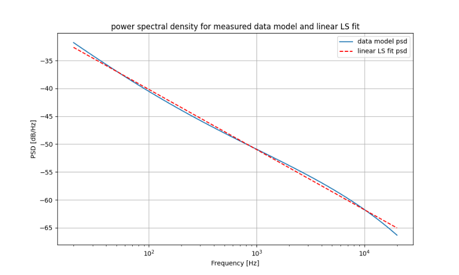
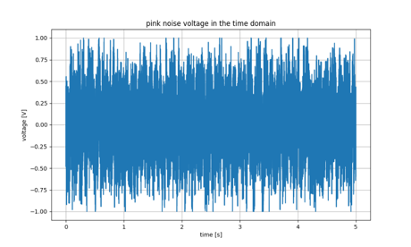

Project Overview
Final Breadboard Implementation
This project demonstrates the practical design and implementation of an analog pink (1/f) noise generator. Pink noise—characterized by equal power per octave—is widely used in audio testing, acoustic measurements, psychoacoustic research, and as a sleep aid.
True Analog Generation
Leverages avalanche breakdown noise from a reverse-biased BJT for authentic white noise
Passive Frequency Shaping
Multi-stage RC filter network provides -3 dB/octave spectral slope
Adjustable Output
User-controllable amplitude (0-2V peak) via potentiometer
Comprehensive Validation
Performance verified through simulation and physical measurements
Core Specifications
- Output Noise: Pink Noise (approx. -3 dB/octave PSD slope)
- Output Amplitude: Adjustable up to 2V peak (via potentiometer)
- DC Offset: Centered at 0V
- Power Supply: Dual ±9V DC (from two 9V batteries in series)
- Key Components: BC337-16 BJT, TL072CP Op-Amps, Passive RC Network
Circuit Design
Three-Stage Architecture
White Noise Generation
Generates white noise using the inherent avalanche breakdown noise of a reverse-biased BJT (BC337-16)
Spectral Shaping
Shapes the spectrum using a passive RC shelving filter network to achieve the -3 dB/octave slope
Amplification
Amplifies and buffers the signal with adjustable gain control for practical output levels
Circuit Schematic

Final circuit schematic showing all three stages
Design Highlights
- Q1 (BC337-16): Operated in reverse breakdown mode as the white noise source, biased by the -9V rail
- U1A (TL072): First-stage amplifier providing initial gain (~60 dB) to boost the weak noise signal
- R7, R8, C5, C6, C7: Passive RC filter network forming three cascaded shelving stages
- U2A (TL072): Output buffer stage with user-adjustable gain via potentiometer R9
Results & Performance
Key Findings
Challenge
The BC337-16 BJTs exhibited lower-than-expected avalanche breakdown noise amplitude
Solution
Increased first-stage gain by replacing the 100kΩ feedback resistor with 10MΩ (100× gain increase)
Trade-off
While achieving required output voltage, resulted in a spectrum slightly "whiter" than ideal pink noise
Performance Metrics
- Spectral Slope: Achieved approximately -3 dB/octave across most of the audio band
- Output Amplitude: Successfully met the 2V peak specification with adjustable control
- Project Score: 145.16 (normalized error metric for adherence to ideal pink noise)
Simulation vs. Real Results Comparison
Simulation

Simulated PSD with Model
Real Circuit

Measured PSD with Model
Simulation
Simulated PSD Linear Fit
Real Circuit

Measured PSD Linear Fit
Simulation
Simulated Voltage vs. Time
Real Circuit

Measured Voltage vs. Time
Simulation

Simulated Distribution
Real Circuit

Measured Distribution
Audio Samples
Explore and listen to recorded signals from the project:
Build Progress

Early Prototype on Breadboard
Final Breadboard Implementation
Future Improvements
While this project successfully demonstrates the core concepts of analog pink noise generation, several enhancements could improve performance:
Enhanced Noise Source
- Evaluate Zener diodes as alternative noise sources
- Screen/select BJTs with higher avalanche noise output
- Consider specialized noise diode ICs for consistent performance
Optimized Filter Design
- Implement additional shelving stages for closer approximation to ideal -3 dB/octave slope
- Explore active filter topologies for better spectral shaping
PCB Implementation
- Design a custom printed circuit board to reduce parasitic capacitance and improve noise immunity
- Implement proper grounding techniques and power plane design
Power Supply Enhancement
- Replace batteries with a regulated ±9V or ±12V supply for consistent long-term operation
- Add voltage regulation and additional filtering to minimize power supply noise